Hi, i’m
Emanuele
Videomaker
and Photographer
Lombardi
Lavori
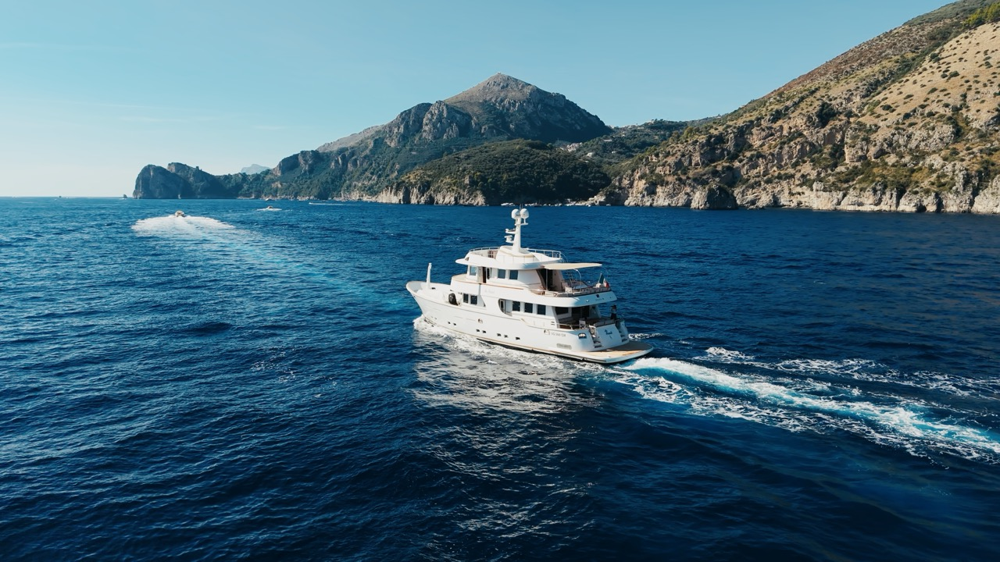
Mr Frank Yacht commercial
Un commercial per Mr Frank, explorer yacht Terranova 85: la barca vista dal drone mentre scorre lungo la costa, gli spazi a bordo, il ritmo lento del mare. L’obiettivo era far sentire com’è viverla, non solo vederla.
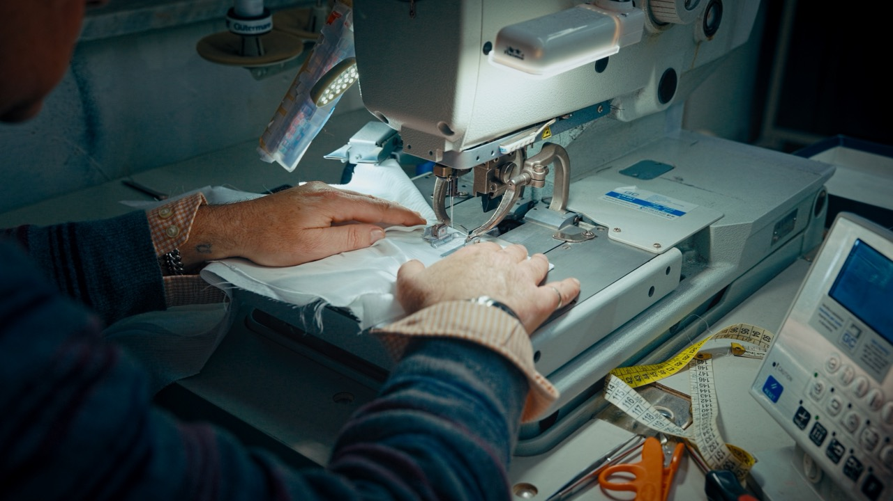
Officina Sartoriale Corporate video
Un corporate video dentro un laboratorio di sartoria: le mani, i tessuti, le macchine e il tempo che serve per fare un capo su misura. Il mestiere raccontato da vicino, con la luce vera del laboratorio.
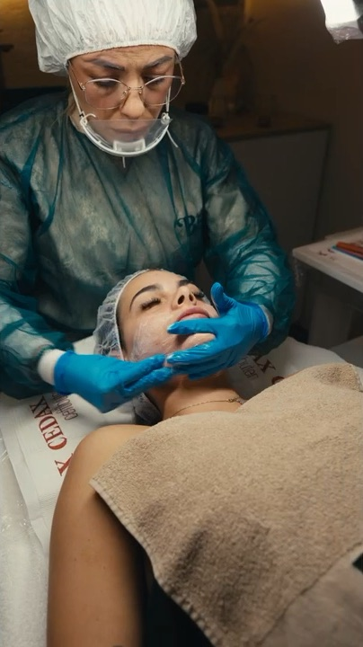
Bellenova Beauty & wellness
Un video verticale per Bellenova, centro estetico: un massaggio raccontato da vicino, con luce morbida, gesti lenti e la calma della cabina. Pensato per i social, per far sentire l’esperienza prima ancora di prenotarla.
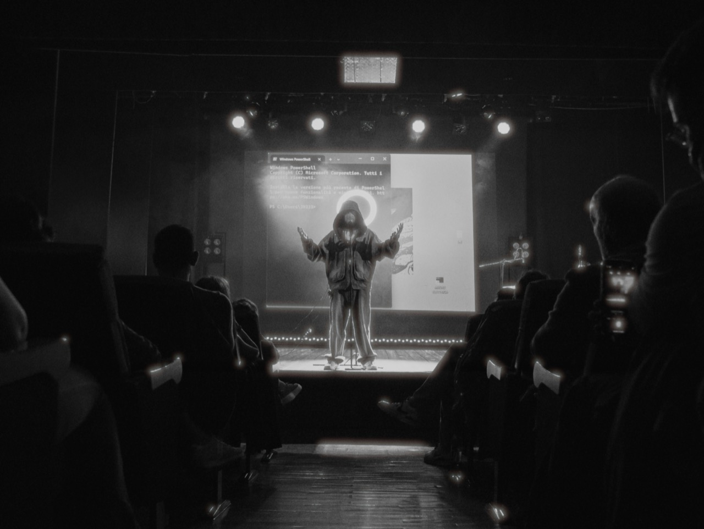
Anastasio Live concert
Il live di Anastasio a Napoli per LMNPP: il palco, la band e il pubblico che canta ogni parola. Un racconto veloce, girato sotto il palco e tra la gente, per restituire l’energia della serata.
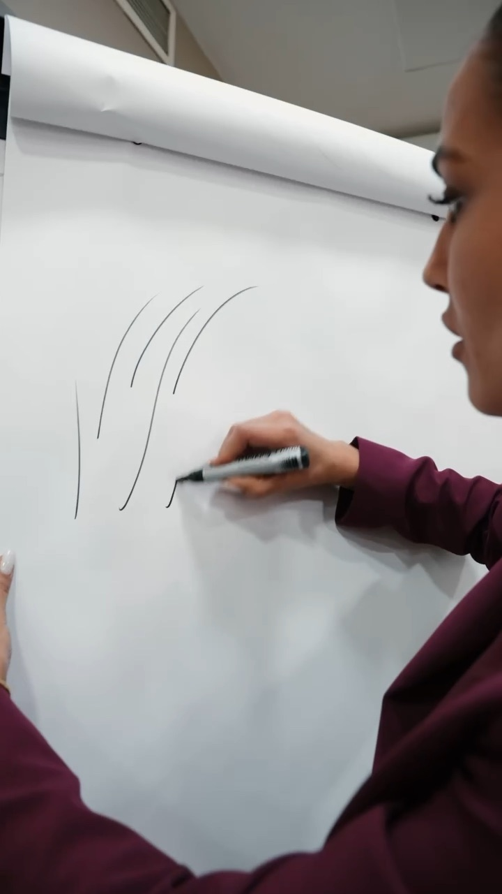
Chiara Della Monica Aftermovie & ads
A Chiara Della Monica servivano video per promuovere il suo corso di microblading. Abbiamo realizzato l’aftermovie dell’intero corso, dalla teoria alla pratica, per far vedere com’è davvero partecipare, e una serie di clip brevi con sottotitoli pensate per le sponsorizzate su Instagram e Facebook. Un unico set, contenuti diversi per lo stesso obiettivo: trovare nuove iscritte.
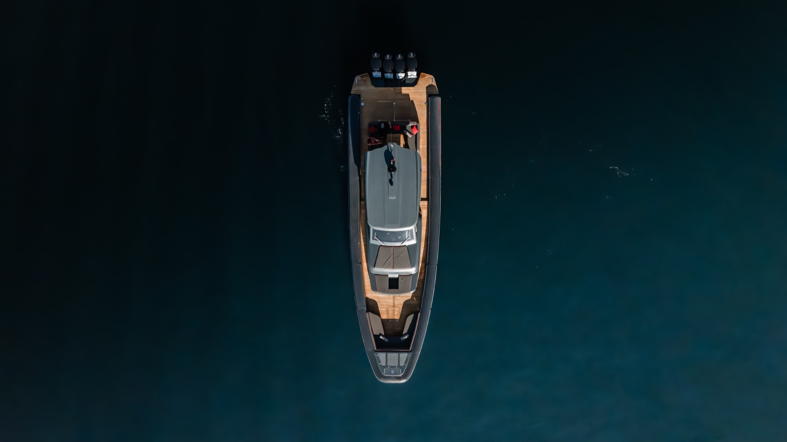
Cubbo Yacht Commercial & aerial photography
A Cubbo Yacht servivano contenuti per promuovere il noleggio del suo gommone nel Golfo di Napoli. Abbiamo realizzato foto e video per il sito e per i social, pensati fin dalle riprese con un doppio formato: 16:9 per il sito e 9:16 per reel e storie. La barca vista dall’alto con il drone e raccontata a bordo, dalla plancia al prendisole fino ai quattro motori, con la città sullo sfondo: tutto quello che serve per far venire voglia di salire.
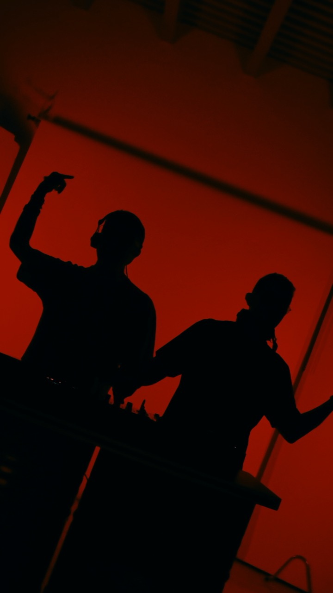
Alaia & Gallo Music video
Il video di “Lipstick” di Alaia & Gallo: luce rossa, consolle e un ritmo serrato. Girato in verticale, pensato per vivere sui social.
Colmare Food
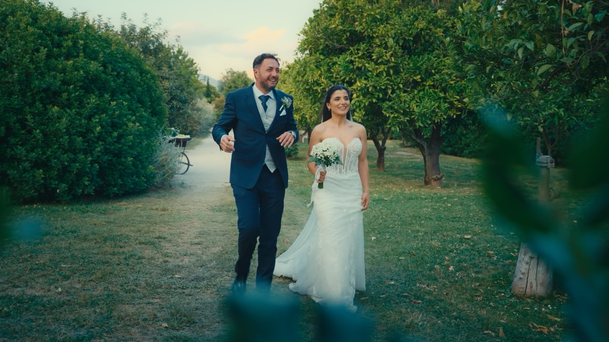
Umberto e Rossella Wedding film
Il matrimonio di Umberto e Rossella a Napoli, dai preparativi alla festa: momenti veri, emozioni spontanee e la città vista dall’alto con il drone.
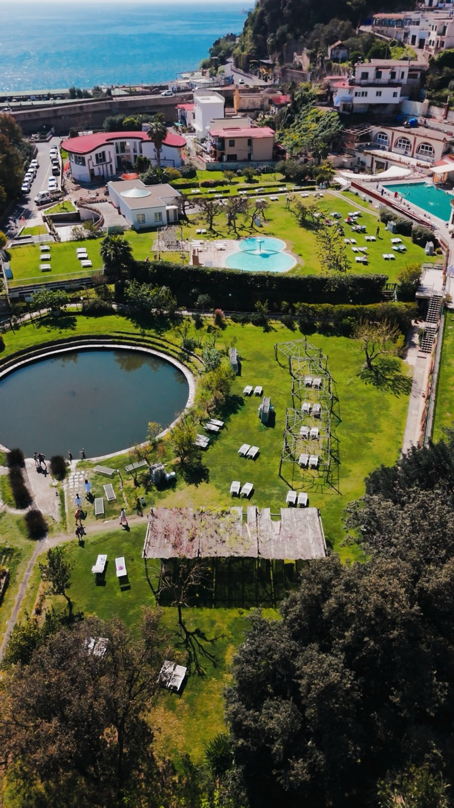
Stufe di Nerone Spa & wellness
“Respira”, un video verticale per le Stufe di Nerone, le terme di Bacoli: il parco, le piscine di acqua termale e la calma del posto, raccontati dall’alto con il drone e da vicino.
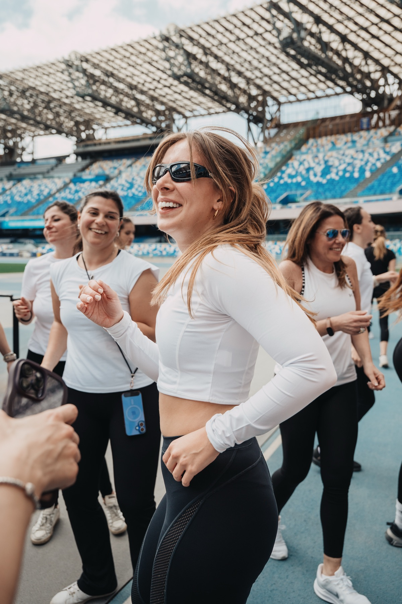
DC Training Sport event
DC Training allo Stadio Diego Armando Maradona: una mattina di sport e benessere sul campo, dalla colazione all’allenamento di gruppo fino al bagno sonoro con le campane tibetane. Il racconto per immagini di una giornata piena di energia.
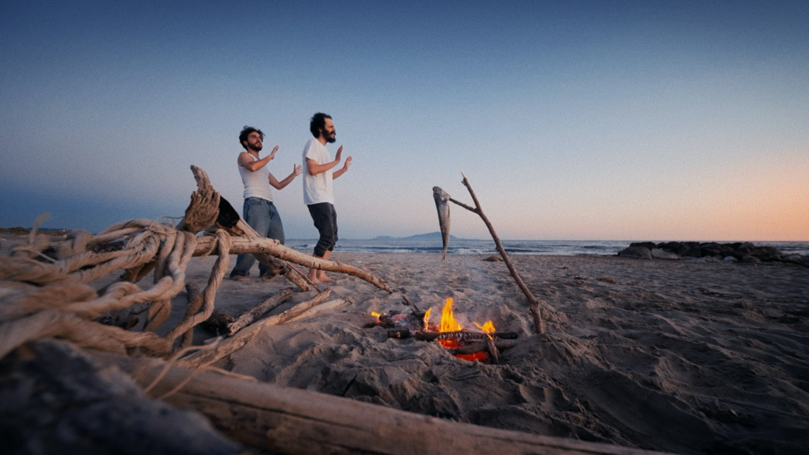
Naufraghi Music video
Un breve music video per “Naufraghi” di Nuken: un falò in spiaggia, il tramonto e due amici. Pochi elementi, luce naturale e un’atmosfera da fine estate.
Manu
- Videomaker
- Photographer
- Drone pilot
- Graphic designer
Ho sempre guardato il mondo cercando storie da raccontare. La mia passione oggi è diventata il mio mestiere.
Ho iniziato con una camera in mano e un canale YouTube, girando video per il puro gusto di raccontare e imparando sbaglio dopo sbaglio. Poi sono arrivati i primi eventi, i primi clienti, e la voglia di dare voce alle storie degli altri. Oggi come allora, la cosa che mi entusiasma di più è la stessa: entrare in un mondo che non conosco, ascoltare chi lo vive e trovare le immagini giuste per mostrarlo. Lavoro come videomaker e fotografo a Napoli e in tutta la Campania, e mi sposto in tutta Italia per aziende, brand, eventi e nautica.
Porto sempre una camera con me
Servizi
Regia
Una visione unica dal concept al montaggio finale: racconto, ritmo e scelte creative tenute insieme dall’inizio alla fine.
Direzione della fotografia · DOP
Camera, ottiche e luce al servizio dell’inquadratura giusta, sul set o in location.
Fotografia
Lo stesso sguardo cinematografico negli scatti: campagne, ritratti, prodotto e architettura.
Produzione video
Commercial, brand film e contenuti social, seguiti dal brief alla consegna con una troupe affidabile.
Montaggio e color
Il taglio e il colore: dove ritmo, suono e tono trasformano il girato in racconto.
Riprese aeree
Drone con pilota patentato, per dare respiro e scala a location, architetture e territorio.
- Pubblicità e commercial
- Video per brand
- Food
- Eventi
- Architettura e interni
- Hospitality
- Nautica e yacht
- Corporate
- Moda
- Automotive
- Social content
- Arte e cultura
- Real estate
- Beauty
- Benessere
- Videoclip musicali
Progetto
Napoli, Italia — disponibile in tutto il mondo